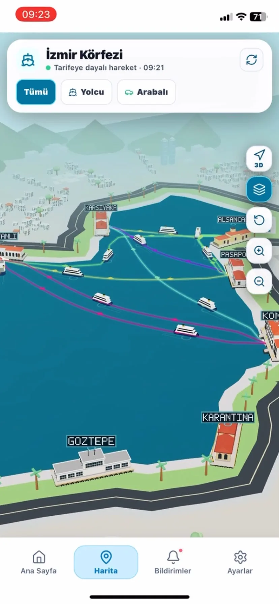
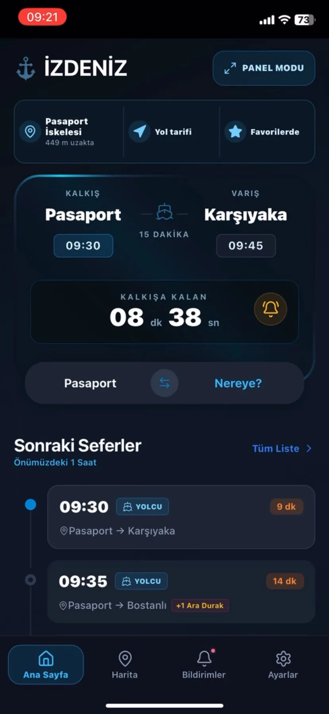

Yeni Mezun · Full-Stack & Mobil Geliştirici
Karmaşık fikirleri sade ve güvenilir ürünlere dönüştürüyorum.
Bilgisayar Mühendisliği mezunuyum; modern web arayüzlerini, sağlam backend servislerini ve çapraz platform mobil deneyimleri uçtan uca geliştiriyorum.
Web + MobilÇapraz platform
Full-StackUçtan uca geliştirme
AI DestekliModern ürün yaklaşımı
09:415G · 87%
GünaydınŞehir şimdi nasıl?
Canlı rota
Konak → Karşıyaka09 dk
14.8 knot · sakin deniz
Sefer KD–1402Gerçek zamanlı telemetri
CANLIKalkış09:08Dalga0.42 m
Kalman aktif14.8 kn
01 · SEÇİLMİŞ PROJELER
Sonuç üreten sistemler.
Her proje; ürün düşüncesi, teknik derinlik ve ölçülebilir bir kullanıcı etkisi etrafında şekilleniyor.
İzmir Deniz
Sefer Asistanı
İZDENİZ açık servisindeki tarifeleri; canlı geri sayım, iskele odaklı akış ve tarife tabanlı 3D körfez haritasıyla birleştiren bağımsız mobil uygulama.
8İç körfez iskelesi
2D / 3DHarita görünümü


Wayra Travel
Konuma göre rota oluşturan; harita, gerçek zamanlı veri, bildirim ve yapay zekâ destekli seyahat önerilerini tek mobil deneyimde birleştiren uygulama.
GenAIKişisel Rota
Gerçek ZamanlıSosyal Eşleşme


Bakır Cosmetic
147 ürün ve 23 markayı; filtreleme, dinamik ürün detayı ve WhatsApp sipariş akışıyla birleştiren kurumsal katalog.
✓ Katalog 147 ürün · 23 marka✓ Akış Filtre · detay · WhatsApp
↗ Detaylı vaka analizini açGerçek ekranlar →
Lezz.io
React tabanlı arayüzü; RESTful API, MongoDB veri katmanı ve güvenli kimlik doğrulama akışıyla birleştiren full-stack web platformu.
✓ Arayüz React + Vite✓ API Node.js + Express✓ Güvenlik JWT + Bcrypt
↗ GitHub'da inceleKaynak kod →
02 · ROL EŞLEŞMESİ
Ekibinizde nerede değer üretirim?
Rolü seçin; yaklaşımımın, araç setimin ve katkı biçimimin o pozisyona nasıl uyduğunu görün.
ROL SEÇİN
Yeni fırsatlara açık
ROLE_MATCH.EXEFULL_STACK
ÜRÜNÜ UÇTAN UCA SAHİPLENME
Fikirden çalışan ürüne kadar tek akış.
Arayüz, API ve veri katmanını birlikte düşünerek ekipler arasındaki boşlukları azaltan, ölçülebilir ve bakımı kolay ürünler geliştiririm.
01 Arayüz ile servis sözleşmesini birlikte tasarlarım.
02 Test edilebilir, okunabilir yapı kurarım.
03 Kullanıcı ihtiyacını teknik kararlara bağlarım.
ReactNode.jsExpressPostgreSQL
03 · ZANAAT LABORATUVARI
Detayları deneyerek geliştiriyorum.
Küçük etkileşimler yalnızca dekorasyon değil; anlaşılabilirliği, hızı ve ürün hissini güçlendiren araçlardır.
A0 TETİKLEME
Dokunsal mikro etkileşim
Basınç hissi veren esnek hareket ve anlık durum geri bildirimi.
B60 FPS
Akışkan sinyal yüzeyi
Animasyon temposunu sistem tercihine göre uyarlayan hafif canvas deneyi.
CLOD: AUTO
Uyarlanabilir mesh
İçerik yoğunluğuna göre sadeleşen görsel veri katmanı.
04 · YETENEKLER
Ürünün tamamını gören mühendislik.
Arayüzden altyapıya, veri hattından kalite güvenceye kadar aynı hedefe odaklanan bütünsel bir yaklaşım.
⌘
Web & Mobil Arayüz
Farklı ekranlarda tutarlı, hızlı ve kullanıcı odaklı web ve mobil deneyimler geliştiriyorum.
- React / Vite
- React Native / Expo
- Flutter / Dart
◇
Backend & Veri
Arayüzleri güvenli servisler, kimlik doğrulama akışları ve ilişkisel ya da doküman tabanlı veri modelleriyle buluşturuyorum.
- Node.js / Express
- PostgreSQL / MongoDB
- Firebase / RESTful API
↯
Akıllı Ürün & Kalite
Konum servisleri, GenAI entegrasyonları ve uçtan uca testlerle ürünlerin yeteneklerini ve güvenilirliğini artırıyorum.
- Gemini / GenAI
- Google Maps / GPS
- Playwright / E2E
05 · DENEYİM
Sahada öğrenilenler.
Teknoloji seçiminden ölçülebilir çıktıya uzanan ürün yolculuklarında üstlendiğim roller.
Ağu 2026 — Eyl 2026
İzmir İnovasyon ve Teknoloji A.Ş.
Mobil Uygulama Geliştirici · Stajyer
İZDENİZ açık API'sini kullanan İzmir Deniz uygulamasında React Native arayüzler, GenAI entegrasyonu ve Playwright E2E testleri geliştirdim.
Tem 2024 — Ağu 2024
İzmir İnovasyon ve Teknoloji A.Ş.
Full-Stack Yazılım Geliştirici · Stajyer
Linux sunucu ve ağ kurulumlarının ardından responsive bir form portalı; Node.js, Express ve PostgreSQL tabanlı RESTful API geliştirdim.
2026
Süleyman Demirel Üniversitesi
Bilgisayar Mühendisliği
3.21 / 4.00 genel not ortalamasıyla mezun oldum; web, mobil, veritabanı ve gömülü sistem projelerinde çalıştım.
UZAKTAN & HİBRİT ROLLERE AÇIK
Heyecan verici bir fikriniz veya açık bir pozisyonunuz mu var? Birlikte iyi bir ürün yaratalım.
Yeni mezun, öğrenmeye açık ve üretmeyi seven bir full-stack & mobil geliştirici arıyorsanız tanışalım.